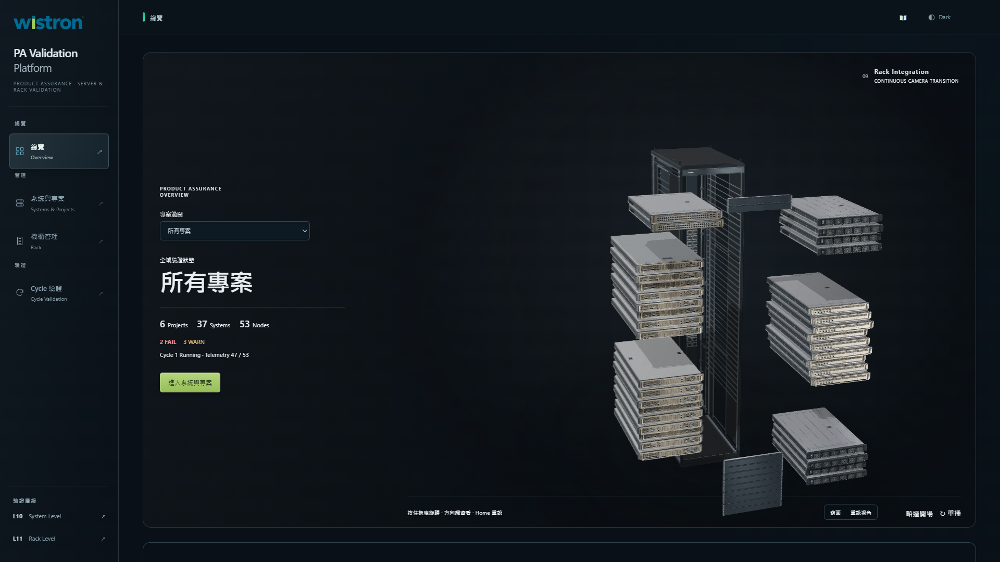
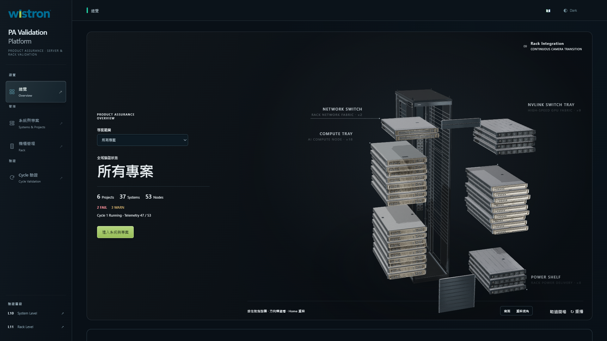
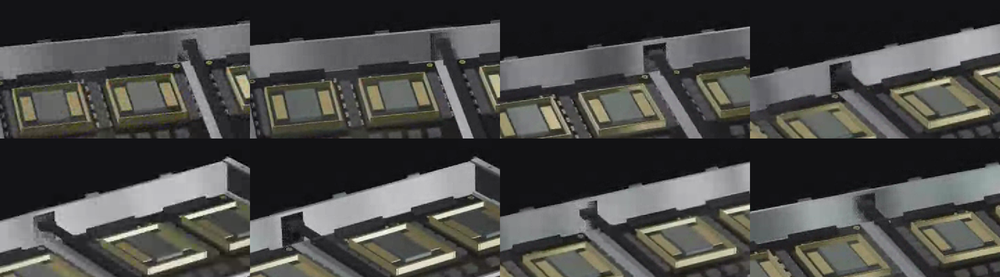
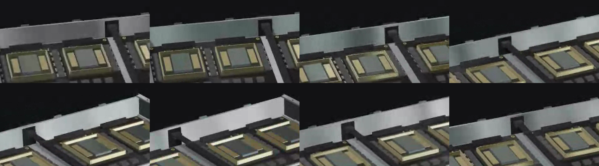

2026-10-15 · 原分支 codex/cinematic-l10-assembly-intro
Before：1005e3033c206be9cae0d84089e9ba786af4bff0（保留前次水流／SSD 修復）
| 項目 | Root cause | 修復與結果 |
|---|---|---|
| Rack 組裝前介紹 | 32cd4f91 加入 L10 前段時，global progress < .56 強制隱藏；到 .56 時 rackProgress 已超過文字的 .327 截止點，兩個條件讓文字永遠不顯示。 | 恢復 63f01d1b 的四組原文、數量與實際模型投影。只將文字淡入淡出映射至既有 19.7–22 秒轉場，避免巢狀 easing 壓成半秒。實播顯示約 2.28 秒，四主標同時 opacity > .8 約 1.47 秒。 |
| 系統後端 Busbar 接頭閃爍 | l10-chassis 後壁內面與 l10-io 黑色插座正面同在 z=-2.949；四組正面積三角形重疊，共 0.043143 平方場景單位，造成 Z-fighting。 | 僅將後壁內面分成四個邊條，插座原面填滿中央範圍。重疊 4→0，無缺口；外側後壁、接頭、尺寸、法線、透明度與 PBR 不變。 |
窄桌面沿用舊版精簡數量副標；未改文案、字型或配色。沒有改 Rack、GLB、冷卻管路、Shader、Camera、Lighting、Timeline 或其他設備動作，總長仍為 39.7 秒。
Chromium／RTX 4070／ANGLE D3D11，正式 Dashboard 入口、既有合成後端 fixture；無實機連線。錄影含載入前導，片中的時間不等於播放器時鐘；介紹位於動畫的 19.7–22 秒。全片 2,370 個 WebGL 投影事件，沒有 JavaScript／WebGL 錯誤。


兩次獨立瀏覽器執行的阻尼停止精度造成相機數值最大差 0.000107 場景單位，非逐位元相同矩陣；相機程式與時間點不變。Busbar 對照的初始相機及追蹤座標則完全一致。


使用既有 orbit 控制，各錄製 8 秒診斷鏡頭（不是正式影片相機），未修改渲染。115 個取樣幀 × 15 個表面追蹤點：亮度差 P95 124.80 → 5.07；亮度跳變 >35 的次數 702 → 0。保留正常 PBR 明暗變化，解析度全程 1.0，無關閉光照或降低畫質。
app/static/js/core-scene.js：caption 專屬時鐘與投影欄位。app/static/js/hero-callouts.js：讀取 caption 時鐘；保留原文與投影佈局。app/static/js/l10-hardware.js：後壁單一內面開口，消除與插座的共面面片。4,004 組動畫狀態比對：除兩個 caption 欄位外不變。所有其他 L10 Mesh 與 I/O（含 SSD、插座）位元組相同；其餘機箱面也相同。1366×768、1920×1080、3440×1440 的明暗主題共六組通過。Runtime manifest 225 檔一致；設計檢查無新增問題。
重現／驗證：node app/qa/l10-callout-timing.cjs、node app/qa/l10-busbar.cjs、node app/qa/l10-p1-ssd.cjs、node app/qa/l10-followup-evidence.cjs。原生錄影腳本為 l10-rack-callouts.cjs video 與 l10-busbar-playback.cjs before|after，需要 Playwright、Chrome 與錄影用 FFmpeg。
原始紀錄與載入資源 SHA256：正式播放 · Busbar 對照 · Busbar WebGL 追蹤。Busbar 錄影早於 caption 最終時序調整，資源紀錄保留當時實際 hash；其中硬體來源與最終版一致。